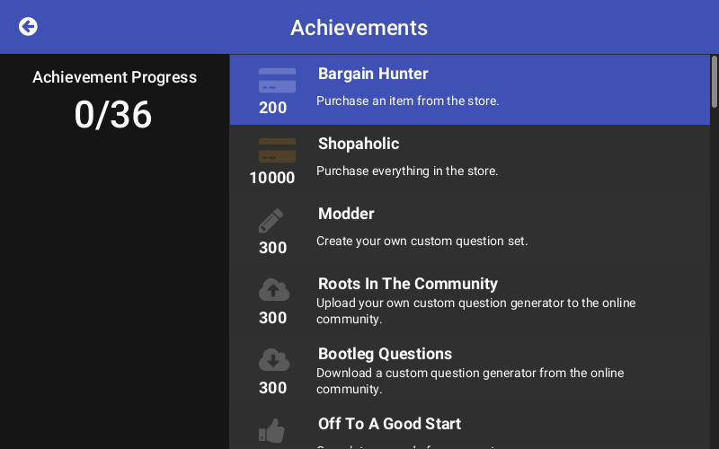

A simple "New Tab" page that opens every time I open a new tab or window in firefox.
The only significant feature it has is to directly search on a
set of desired websites such as google, duckduckgo, and the archwiki.
A custom direct search can be performed by appending !code to the end
of your search query where code is replaced with the desired website code.
For example if I wanted to search for pulseaudio on the archwiki I would enter into the input field:
pulseaudio!aw
followed by the enter key.
COMPLETE
search bar + header + quick links
an attempt to emulate the spotify social bar for lastfm users
An emulation of the spotify "creeper" or socializer bar but for last.fm which shows what your friends are listening to in real time or what they listened to most recently.
Goals for the future are to implement animations to change the order of users as what they are listening to changes in a similar fashion to the spotify creeper bar.
WIP
Tatai is an award winning, open source Te Reo Maori number pronunciation aid targeted both at people who want to learn Maori for the first time and for people who simply want to improve. Tatai runs on Linux and Windows and any other operating system that supports Java 8, JavaFX 8 and the voice recognition software HTK.
The "brains" behind Tatai's voice recognition is a combination of HTK (Hidden Markov Toolkit) and the Te Reo Maori dictionary files provided by Dr Catherine Watson from The University of Auckland.
This application was developed for the course SOFTENG 206 at The University of Auckland as a part of the major project in the paper. As a consequence, an online search will show many projects of the same name, however our project won both First Place and the People's Choice awards.
COMPLETE
Tatai uses HTK to do voice recognition.
The achievements screen.
inspired by counterrecords.com
An interactive grid that shows what albums you have been scrobbling in the last 3 months. The grid regain their color and a slight radial gradient as the mouse is hovered over each tile.
Goals for the future are to implement animations to change the order of users as what they are listening to changes in a similar fashion to the spotify creeper bar.
Your last.fm username:
Grid width and height:
Image quality:
COMPLETE